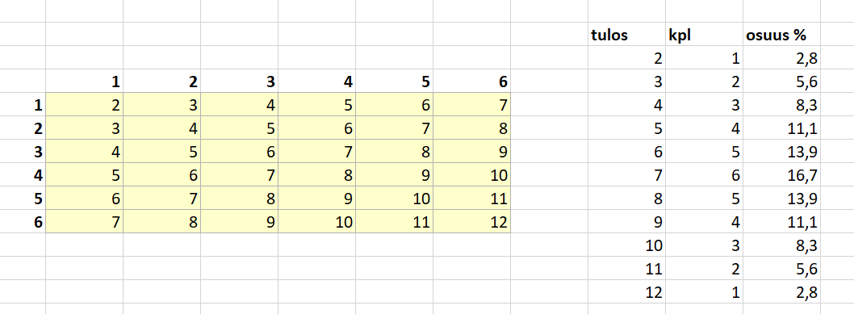
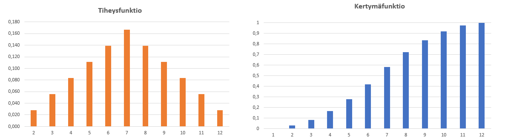
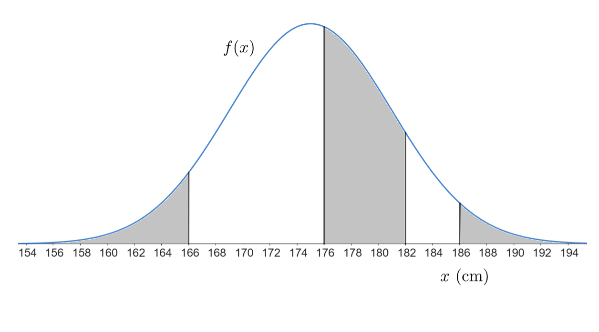
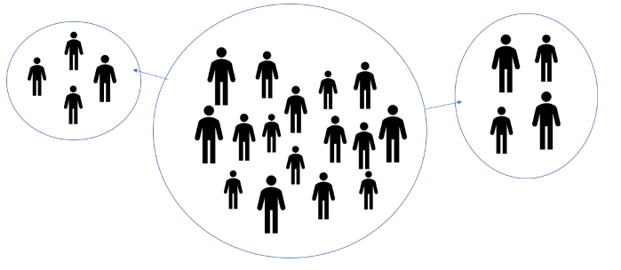
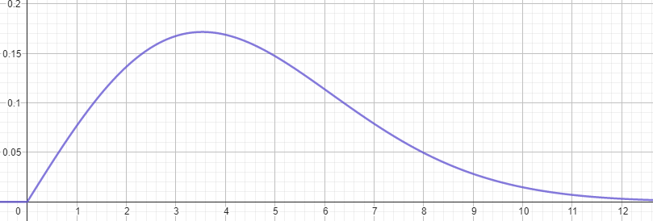
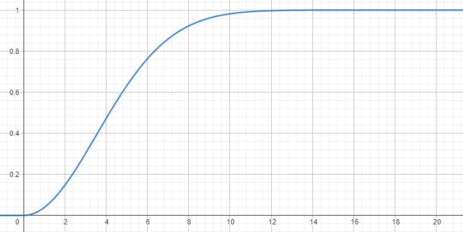

Tilastomatematiikkaa
Contents
Tilastomatematiikkaa#
Integraalilaskentaa sovelletaan myös tilastotieteessä. Tähän liittyvät käsitteet todennäköisyysjakauma, tiheysfunktio ja kertymäfunktio. Tarkastellaan aluksi todennäköisyysjakauman käsitettä ja erityisesti jatkuvaa todennäköisyysjakaumaa. Sen jälkeen syvennytään tarkemmin normaalijakaumaan, joka on eräs yleisimmin käytetyistä todennäköisyysjakaumista. Lisäksi tutustutaan Weibull-jakaumaan, jolle on myös paljon sovelluksia eri aloilla.
Todennäköisyysjakauma#
Todennäköisyysjakama yhdistää jonkin tapahtuman \(A\) ja sen todennäköisyyden \(P(A)\). Minkä tahansa tapahtuman todennäköisyys on lukujen 0 ja 1 välillä. Luku 0 tarkoittaa täysin mahdotonta ja 1 täysin varmaa tapahtumaa. Usein luvut esitetään myös prosentteina 0 % - 100 %. Tapahtuman ja sen vastatapahtuman, esimerkiksi “sataa” ja “ei sada”, todennäköisyyksien summa on 100 %.
Todennäköisyyttä voidaan tarkastella joko klassisesta tai tilastollisesta näkökulmasta. Klassisessa lähestymistavassa todennäköisyys on suotuisien alkeistapauksien määrä jaettuna kaikkien alkeistapausten määrällä. Esimerkiksi tavallisen nopan heitossa on 6 mahdollista silmälukua eli 6 alkeistapausta. Jos tapahtuma \(A\) on parillinen silmäluku, niin näitä löytyy 3 kpl ja tapahtuman todennäköisyys on silloin \(P(A)=3/6=0.5\). Vastaavasti esimerkiksi tapahtuman “silmäluku enintään 2” todennäköisyys on \(P(A)=2/6=1/3\).
Tilastollinen todennäköisyys puolestaan perustuu aiempiin tapahtumiin. Tällaisia ovat esimerkiksi urheilijan suoritukset tai laitteiden rikkoontumiset. Jos esimerkiksi jääkiekossa maalivahtia kohti on tullut 260 laukausta joista 40 on mennyt maaliin, niin seuraavassakin ottelussa voidaan olettaa, että tapahtuman “torjunta ei onnistu” todennäköisyys on 40/260=15 % ja toisaalta tapahtuman “torjunta onnistuu” todennäköisyys on 100 % - 15 % = 85 %.
Todennäköisyysjakaumassa tapahtumilla on usein monta erilaista vaihtoehtoa ja niitä kutsutaan muuttujan arvoiksi. Jakauma esittää niitä vastaavat todennäköisyydet. Jos heitetään kahta noppaa, niin muuttuja voi olla esimerkiksi silmälukujen summa. Seuraavaan kuvaan on taulukoitu kaikki mahdolliset tulokset. Lasketaan eri vaihtoehtojen kappalemäärät ja niiden osuudet kaikista eri tuloksista (36 kpl). Osuuksia kuvaava taulukko on siis todennäköisyysjakauma ja sitä kutsutaan myös nimellä tiheysfunktio. Se voidaan esittää myös graafisesti, kuten jälkimmäisessä kuvassa. Tiheysfunktiosta lasketaan kertymäfunktio siten, että tietyn tapahtuman todennäköisyyteen lisätään sitä pienempiä muuttujan arvoja vastaavat todennäköisyydet. Esimerkiksi kahden nopan heitossa muuttujan arvoa 5 vastaava kertymäfunktion arvo on todennäköisyys sille, että silmälukujen summaksi tulee 2, 3, 4 tai 5 eli enintään 5. Tiheysfunktiossa kaikkien arvojen summa on 1 (eli 100 % todennäköisyydellä silmälukujen summa on jotakin väliltä 2 … 12), ja kertymäfunktiossa suurinta muuttujan arvoa vastaa arvo 1 (eli 100 % todennäköisyydellä silmälukujen summa on enintään 12).


Kun mahdollisia muuttujan arvoja on vähän, kyseessä on diskreetti todennäköisyysjakauma. Kun muuttujan arvojen määrä kasvaa, niin todennäköisyysjakauma muuttuu pylväskaaviosta yhtenäiseksi käyräksi ja tällöin jakauma on jatkuva. On olemassa useita erilaisia funktioita, joilla voidaan mallintaa tietynlaisiin tilanteisiin liittyvää todennäköisyysjakaumaa. Tarkastellaan tässä normaalijakaumaa ja Weibull-jakaumaa.
Normaalijakauma#
Funktiosta \(N(\mu,\sigma)=\frac{1}{\sigma \sqrt{2\pi}}e^{-\frac{(x-\mu)^2}{2\sigma^2}}\) käytetään usein nimitystä normaalijakauma. Tarkemmin se on normaalijakauman tiheysfunktio. Funktion parametrejä ovat keskiarvo \(\mu\) ja keskihajonta \(\sigma\). Funktion muuttujana on \(x\), joka vastaa todennäköisyysjakaumaan liittyvää muuttujan arvoa. Jos jakauma kuvaisi vaikkapa ihmisten pituutta, niin \(\mu\) olisi suuren ihmisjoukon pituuksien keskiarvo, ja \(\sigma\) olisi ihmisten pituuksien keskimääräinen poikkeama tästä keskiarvosta. Muuttujan \(x\) paikalla olisi jokin pituus, esimerkiksi 175 cm, ja tällöin funktion arvo kuvaisi sitä, kuinka suuri osa väestöstä on 175 cm pituisia. Eksponenttifunktion edessä oleva kerroin skaalaa jakauman korkeuden sellaiseksi, että jakauman alle jäävä kokonaispinta-ala on tasan 1, toisin sanoen esimerkiksi kaikki pituuksien arvot kattavat 100 % väestöstä.
Normaalijakaumasta ei kuitenkaan yleensä ole mielekästä käyttää tiheysfunktiota, sillä muuttujan asteikko on jatkuva. Todennäköisyys olla 175.0 cm pitkä on jakauman mukaan eri suuruinen kuin todennäköisyys olla 174.9 cm tai 175.1 cm. Käytännössä taas merkitystä lienee enemmän sillä, kuinka suuri osuus väestöstä (esimerkiksi työhaalarien tai golfmailojen ostajista) on vaikkapa alle 160 cm tai yli 190 cm pitkiä. Normaalijakaumasta käytetäänkin yleensä kertymäfunktiota. Se on määrätty integraali tiheysfunktiosta siten, että integroinnin alarajana on \(-\infty\) ja ylärajana yleisesti muuttuja \(x\), jonka paikalle voi tietysti sijoittaa haluamansa luvun. Käytetään seuraavissa esimerkeissä normaalijakauman \(N(\mu,\sigma)\) -merkinnän sijasta tuttuja funktiomerkintöjä, eli tiheysfunktio on \(f(x)\) ja kertymäfunktio \(F(x)\). Laskukaavana integraalilasku näyttää seuraavalta (muuttujan \(x\) paikalle on integrointia varten vaihdettu muuttuja \(t\), jotta ylärajaksi voidaan sijoittaa \(x\)):
\(F(x)=\frac{1}{\sigma \sqrt{2\pi}} \int_{-\infty}^{x}=e^{-\frac{(t-\mu)^2}{2\sigma^2}}~\text{d}t\)
Lasku näyttää hankalalta, ja onkin itse asiassa mahdoton kaikista parhaillekin laskijoille ja laskimille. Tällaiselle laskulle ei ole olemassa niinsanottua analyyttistä tulosta eli varsinaista lopullista lauseketta. Normaalijakauman kertymäfunktiolle \(F(x)\) voidaan laskea vain arvoja tietyllä muuttujan \(x\) arvolla ja sekin tehdään käytännössä tietokoneella. Numeerisen laskennan työkalut (esimerkiksi taulukkolaskentaohjelmat) voivat käyttää tähän esimerkiksi puolisuunnikassäännön kaltaisia menetelmiä.
Normaalijakaumaa käytetään lähtökohtaisesti sen laskemiseen, kuinka suurella osalla populaatiosta jonkin muuttujan arvo on pienempi kuin jokin valittu arvo \(a\). Lisäksi voidaan laskea, kuinka suurella osalla populaatiosta muuttujan arvo on suurempi kuin jokin arvo \(b\), tai kuinka suurella osalla se on arvojen \(a\) ja \(b\) välissä. Kuvassa on havainnollistettu harmailla alueilla nämä eri tapaukset jakaumassa, jonka keskiarvo on 175 cm ja keskihajonta 6 cm. Vasemmanpuoleinen pinta-ala vastaa alle 166 cm pitkien ihmisten osuutta ja se lasketaan \(F(166)=\int_{-\infty}^{166} f(x)~\text{d}x\). Keskimmäinen pinta-ala vastaa 176 cm - 182 cm pitkien ihmisten osuutta ja lasketaan \(\int_{176}^{182} f(x)~\text{d}x\), mutta käytännössä kuitenkin numeerisesti \(F(182)-F(176)\). Oikeanpuoleinen pinta-ala tarkoittaa yli 186 cm pitkien ihmisten osuutta ja sen voisi laskea periaatteessa integraalina \(\int_{186}^{\infty} f(x)~\text{d}x\), mutta käytännössä \(1-F(186)\).

Normaalijakaumaa voidaan käyttää myös käänteisesti, eli sen selvittämiseen, mikä on sellainen muuttujan arvo, että sen alittaa (tai ylittää) jokin tietty osuus populaatiosta. Voidaan laskea esimerkiksi, mikä on sellainen hemoglobiinin arvo, että vain 5 %:lla populaatiosta on sitä korkeampi arvo. Laskut onnistuvat helposti esimerkiksi taulukkolaskentaohjelmalla.
Normaalijakauman keskiarvon määritys#
Normaalijakaumaa käytetään silloin, kun halutaan saada tietoa otoksen avulla koko populaatiosta. Tällöin oletetaan, että muuttujan arvot noudattavat koko populaatiossa normaalijakaumaa, jonka parametrit saadaan otoksen keskiarvosta ja keskihajonnasta. Jos otoksen keskiarvo on \(\mu\) ja otoksen keskihajonta \(\sigma\), niin usein voidaan hyvin olettaa, että tutkittu muuttuja noudattaa suunnilleen normaalijakaumaa \(N(\mu,\sigma)\). Lisäksi usein kiinnostavin asia on ominaisuuden keskiarvo, ei niinkään jakauma muuten.
Normaalijakauman muodostamisessa otoksen perusteella on huomiotava, että otos ei välttämättä kuvaa koko populaatiota luotettavasti. Oheinen kuva havainnollistaa asiaa (joskin oikeasti sekä populaatio että otokset sisältäisivät paljon enemmän ihmisiä). Jos on tarkoitus selvittää esimerkiksi tietyn ikäisten miesten keskimääräistä pituutta, niin otokseen saattaa vahingossa valikoitua joko pelkästään keskimääräistä lyhyempiä tai keskimääräistä pitempiä ihmisiä.

Kuvitellaan, että otetaan samasta populaatiota monta eri otosta, joilla on eri otoskoko. Jokaisesta otoksesta mitattavalle ominaisuudella tulee oma keskiarvonsa. Keskiarvot ovat melkein samoja, mutta poikkeavat toisistaan hieman. Kun otoskoko kasvaa, niin keskiarvo alkaa lähestyä populaation keskiarvoa. Tämän voi itsekin todeta esimerkiksi luomalla taulukkolaskentaohjelmaan paljon (normaalijakaumaa noudattavia) satunnaislukuja ja laskemalla keskiarvoja eri kokoisille otoksille näistä luvuista.
Kuvitellaan vielä, että otetaan samasta populaatiosta monta eri otosta sillä tavalla, että otoskoko pysyy samana. Jokaisesta otoksesta tulee jälleen oma keskiarvonsa. Lasketaan näiden keskiarvojen keskihajonta eli niiden keskimääräinen poikkeama keskiarvojen keskiarvosta. Todetaan, että mitä isompi on otoskoko, niin luotettavammin saadaan lähes sama keskiarvo jokaisella kokeilulla. Tämänkin voi itse kokeilla taulukkolaskentalaskentaohjelmalla. Yleisesti tätä otoksen luotettavuutta kuvaillaan suureella keskiarvon keskivirhe, joka lasketaan kaavalla \(\frac{\sigma}{\sqrt{n}}\) missä \(\sigma\) on otoksen keskihajonta ja \(n\) otoskoko.
Käsitteet luottamusväli ja luottamustaso liittyvät toisiinsa sekä otoksen keskiarvoon ja populaation keskiarvoon seuraavasti. Määritetään ensin otoksesta jonkin ominaisuuden keskiarvo \(X\). Koko populaatiossa keskiarvo ei välttämättä ole täsmälleen sama. Voidaan kuitenkin tietyllä luottamustasolla, esim. 90 % todennäköisyydellä, väittää että populaation keskiarvo on lähellä otoksen keskiarvoa. Tarkemmin populaation keskiarvon oletetaan olevan symmetrisesti molemmin puolin otoksen keskiarvoa: \(X-\Delta \dots X+\Delta\), missä \(\Delta\) on virhemarginaali. Kyseistä lukuväliä sanotaan luottamusväliksi. Otoksen keskiarvon ympärille voidaan määrittää luottamusväli, jolle populaation keskiarvo asettuu tietyllä luottamustasolla. Mitä suurempi on luottamustaso, niin sitä suurempi on virhemarginaali. Toisin sanoen ilmoittamalla tulos epätarkasti (esimerkiksi “ihmisten keskimääräinen pituus on 150 cm - 190 cm välillä”) on todennäköisemmin oikeassa kuin ilmoittamalla tulos tarkasti (“ihmisten keskimääräinen pituus on on 171 cm - 173 cm välillä”).
Keskiarvon keskivirhe vastaa suunnilleen 68 % luottamustasoa. Usein tutkimuksessa halutaan korkeampi, esimerkiksi 95 % tai 99 % luottamustaso. Tällöin luottamusväli lasketaan normaalijakauman kertymäfunktion avulla. Normaalijakauma muodostetaan siten, että sen keskiarvona on otoksen keskiarvo, ja keskihajontana keskiarvon keskivirhe. Sitten selvitetään, mitkä muuttujan arvot \(x_1\) ja \(x_2\) rajaavat tiheysfunktion sillä tavalla, että määrätyn integraalin \(F(x_2)-F(x_1)=\int_{x_1}^{x_2} f(x)~\text{d}x\) arvoksi jää haluttu luottamustaso. Esimerkiksi jos luottamustasoksi on valittu 90 %, niin alarajan vasemmalle puolelle pitää jäädä 5 % ja ylärajan oikealle puolelle 5 %. Tällaisen laskun suoritukseen tarvitaan esimerkiksi taulukkolaskentaohjelmaa.
Weibull-jakauma#
Joiden ilmiöiden todennäköisyysjakauma ei ole symmetrinen. Esimerkiksi tietyn tuulennopeuden esiintyvyys jollakin tietyllä paikkakunnalla noudattaa vinoa jakaumaa. Tällaisia ilmiöitä voidaan kuvata Weibull-jakaumalla (Wikipedia).
Weibull-jakauman tiheysfunktio on muotoa \(f(\alpha,\beta, x)=\frac{\alpha}{\beta}(\frac{x}{\beta})^{\alpha-1} e^{-(\frac{x}{\beta})^\alpha}\)\) kun \(x \geq 0\), ja \(f(x)=0\) kun \(x < 0\). Kuvassa on esimerkkinä jakauma \(f(2,5, x)\). Jos kyseinen jakauma kuvaisi tuulen nopeutta, niin tuulen nopeus olisi yleisimmin (noin 17 % todennäköisyydellä, eli 17 % ajasta) noin 3.5 m/s. Jakaumien muoto (joka määrää Weibull-jakauman kertoimet (\alpha) ja (\beta)) on erilainen esimerkiksi rannikolla ja sisämaassa.

Weibull-jakaumallekin voidaan laskea kertymäfunktio eli määrätty integraali samalla tavalla kuin normaalijakaumalle. Kertymäfunktiolle muodostuu lauseke \(F(x)=1-e^{-(\frac{x}{\beta})^{\alpha}}\). Seuraavassa kuvassa on edellisen esimerkkijakauman kertymäfunktio. Sen mukaan tuulen nopeus on 50 % ajasta enintään noin 4 m/s, ja 90 % ajasta enintään noin 7 m/s.

Weibull-jakaumaa käytetään insinööritieteissä usein mallintamaan jonkin laitteen kestävyyttä. Tällöin muuttujana (x) on aika, ja Weibull-jakauman arvo kuvaa laitteen todennäköisyyttä hajota kyseisenä ajankohtana. Määrätyn integraalin arvo alarajalta (x=0) ylärajalle (x=t) kuvaa todennäköisyyttä sille, että laite hajoaa ajankohtaan (t) mennessä.
Weibull-jakaumaan liittyvät laskutoimitukset tapahtuvat samoilla periaatteella kuin normaalijakaumaan. Taulukkolaskennan ohjelmistoissa on omat valmiit funktionsa näidenkin jakaumien tiheys- ja kertymäfunktioiden sekä käänteisten arvojen laskemiseen.